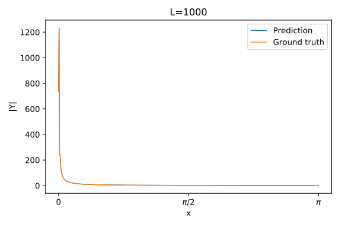
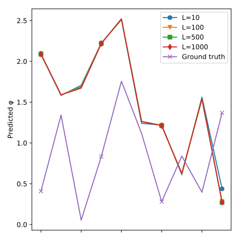

非线性回归¶
摘要
本节将讨论如何将一个解析的非线性的回归问题，表述成使用非线性函数激活的线性回归问题。特别地，我们将通过自己定义“激活层”来引入我们定义的解析的非线性函数。
理论¶
一般回归问题¶
回忆我们的多输出方程\mathbf{y} = \mathcal{F}(x)，其中\mathcal{F}可以是非线性函数，那么我们可以考虑使用一个带可调参数的模型\mathbf{D}_{\boldsymbol{\Theta}}(\mathbf{x})来模拟它，其中\boldsymbol{\Theta}是可调的参数。于是，该问题可以被表述为
其中，(\mathbf{x}_k,~\mathbf{y}_k) \in \mathbb{D}来自由非线性函数\mathcal{F}产生的数据集。
非线性解析函数的分解¶
对于一个解析的非线性函数，我们假设任何这样的函数都可以分解成多个复合函数\mathbf{f}_i，其中每个复合函数都只包含一个仿射变换\mathbf{h}_j = \mathbf{W}_j \cdot + \mathbf{b}_j和一个对在各元素操作的非线性激活函数\Lambda_j。因此，复合函数可以写作\mathbf{f}_i = \Lambda_j \circ \mathbf{h}_j。于是，整个非线性的函数可以表述为：
例如，对函数
可以分解为：
- \mathbf{h}_1 (\mathbf{x}) = \mathbf{B} \mathbf{x} + \mathbf{c}；
- \Lambda_1 (\mathbf{h}_1) = \log ( | \mathbf{h}_1 | )；
- \mathbf{h}_2 (\Lambda_1) = \mathbf{A} \Lambda_1；
- \Lambda_2 (\mathbf{h}_2) = \exp ( \mathbf{h}_2 )。
实际上，当然还存在更复杂的情况，例如，一个非线性函数\mathbf{f}_j是两个非线性函数的和、积、商，或是某函数导数的范数等……但原则上，这些函数都可以写作上述（多个）可分解复合函数的（联合）变换。本质上，函数中的任何参数，都可以看作是在参与一个仿射变换。因此，任何函数只要能写出解析式，理论上就能分解为（多个）上述的可分解函数的形式。
相信有一点功底的读者都可以看出，(2)其实就是一个神经网络的表达式。换言之，只要知道一个函数的解析式，我们就可以用一个或多个神经网络来为其建模。虽然我们可能不知道这个函数里具体的参数值，但通过对网络训练，我们可以让网络的参数回归到函数的参数上。
本节问题¶
考虑一组三角函数的线性组合，使得列向量\mathbf{x} \in \mathbb{R}^T映射到列向量\mathbf{y} \in \mathbb{R}^T，其中\mathbf{x}，\mathbf{y}均为时间域上的变量，则：
如果我们将其写成矩阵的形式，应当有
设若我们有大量的样本(\mathbf{x}_k,~\mathbf{y}_k)，但我们不知道参数\boldsymbol{\omega},~\boldsymbol{\varphi},~\mathbf{a}。若我们想在频率域上拟合出该模型的参数，则根据(1)，该问题可以写作：
其中，FFT指快速傅里叶变换，虽然FFT是一个线性变换，但显然，该问题是一个非线性问题，这是由于预测值的表达式\hat{\mathbf{y}}的表达式(5)是非线性的。
由于表达式(5)是一个显式函数，相比上一节求取低秩近似的仿射变换，我们可以知道，即使该问题即使存在多个不同的\mathbf{x}_k对应同一个\mathbf{y}_k，也不影响我们对问题的求解（即训练得到的参数能和真实参数产生相同的输出）。然而，从这里的参数的定义可以看出，我们在这个问题中使用的参数是非常低秩的（所有的参数秩均为1），这将导致这个问题的解具有高度的不确定性，许多不同的参数组\boldsymbol{\omega},~\boldsymbol{\varphi},~\mathbf{a}均能达到相同的效果。例如，我们已知三个参数向量是长度相同的，若我们选取三个向量各自的第i个元素，和其对应的第j个元素相互交换（例如\omega_i \leftrightarrow \omega_j），则根据(4)，这两个不同的解均能产生相同的效果。另一个例子是，由于余弦函数具有周期性，对\boldsymbol{\varphi}的任意元素\varphi_i，即使令\varphi_i = \varphi_i + 2 \pi，仍不影响拟合的效果。因此，通过(6)求解的向量\boldsymbol{\varphi}也具有不确定性。
根据我们前面提到的对非线性解析函数的分解方法，该问题的模型可以分解为：
- \mathbf{h}_1 (\mathbf{x})= \mathbf{x} \boldsymbol{\omega}^T + \mathbf{1} \boldsymbol{\varphi}^T；
- \Lambda_1 (\mathbf{h}_1) = \cos ( \mathbf{h}_1 )；
- \mathbf{h}_2 (\Lambda_1) = \Lambda_1 \mathbf{a}；
- \hat{\mathbf{Y}} = \Lambda_2 (\mathbf{h}_2) = \mathrm{FFT} ( \mathbf{h}_2 )。
解非线性回归问题¶
我们已经知道，该问题可以建立成一个两层的模型，两层的变换函数和激活函数分别为(\mathbf{h}_1,~\Lambda_1), (\mathbf{h}_2,~\Lambda_2)。然而，实现该模型仍然存在技术问题。即，神经网络中，并未定义\mathbf{h}_1,~\mathbf{h}_2,~\Lambda_2的层API，因此，我们必须自己来实现这些功能。
这一节讨论的内容更偏向于技术实现，而且对新入门的读者而言具有一定的难度。但本节讨论的技术，即自定义网络层，实在是非常广泛地应用在Keras API的用户中。例如，著名的Residual network和Inception network，在Tensorflow-Keras API中均未提供现成的API，需要读者自行设法构造。
熟悉旧版Tensorflow的用户，可能会发现，在实现自定义API的过程上，旧版API使用起来更容易上手；然而，Keras式的API也有其好处，那就是强制用户必须按照规范、统一的标准处理API的定义和接口，使得用户更容易建立规范的编写习惯。
自定义网络层¶
自定义Keras层的方法可以参照：
编写好的层是一个类API，可以同时被顺序模型或类模型调用。
学习一个完全规范化的风格¶
让我们观察Tensorflow-keras模型对最简单的层，全连接层Dense的定义（我们之前也分别在顺序模型和类模型中使用过该API）。下面的内容摘自Tensorflow源码：
1 2 3 4 5 6 7 8 9 10 11 12 13 14 15 16 17 18 19 20 21 | from tensorflow.python.eager import context from tensorflow.python.framework import common_shapes from tensorflow.python.framework import ops from tensorflow.python.framework import tensor_shape from tensorflow.python.keras import activations from tensorflow.python.keras import backend as K from tensorflow.python.keras import constraints from tensorflow.python.keras import initializers from tensorflow.python.keras import regularizers from tensorflow.python.keras.engine.base_layer import Layer from tensorflow.python.keras.engine.input_spec import InputSpec from tensorflow.python.keras.utils import conv_utils from tensorflow.python.keras.utils import generic_utils from tensorflow.python.keras.utils import tf_utils from tensorflow.python.ops import array_ops from tensorflow.python.ops import gen_math_ops from tensorflow.python.ops import math_ops from tensorflow.python.ops import nn from tensorflow.python.ops import nn_ops from tensorflow.python.ops import standard_ops from tensorflow.python.util.tf_export import tf_export |
1 2 3 4 5 6 7 8 9 10 11 12 13 14 15 | @tf_export('keras.layers.Dense') class Dense(Layer): def __init__(self, units, activation=None, use_bias=True, kernel_initializer='glorot_uniform', bias_initializer='zeros', kernel_regularizer=None, bias_regularizer=None, activity_regularizer=None, kernel_constraint=None, bias_constraint=None, **kwargs) def build(self, input_shape) def call(self, inputs) def compute_output_shape(self, input_shape) def get_config(self) |
1 2 3 4 5 6 7 8 9 10 11 12 13 14 15 16 17 18 19 20 21 22 23 24 25 26 27 28 29 30 31 32 33 34 35 36 37 38 39 40 41 42 43 44 | class Dense(Layer): """Just your regular densely-connected NN layer. `Dense` implements the operation: `output = activation(dot(input, kernel) + bias)` where `activation` is the element-wise activation function passed as the `activation` argument, `kernel` is a weights matrix created by the layer, and `bias` is a bias vector created by the layer (only applicable if `use_bias` is `True`). Note: if the input to the layer has a rank greater than 2, then it is flattened prior to the initial dot product with `kernel`. Example: # as first layer in a sequential model: model = Sequential() model.add(Dense(32, input_shape=(16,))) # now the model will take as input arrays of shape (*, 16) # and output arrays of shape (*, 32) # after the first layer, you don't need to specify # the size of the input anymore: model.add(Dense(32)) Arguments: units: Positive integer, dimensionality of the output space. activation: Activation function to use. If you don't specify anything, no activation is applied (ie. "linear" activation: `a(x) = x`). use_bias: Boolean, whether the layer uses a bias vector. kernel_initializer: Initializer for the `kernel` weights matrix. bias_initializer: Initializer for the bias vector. kernel_regularizer: Regularizer function applied to the `kernel` weights matrix. bias_regularizer: Regularizer function applied to the bias vector. activity_regularizer: Regularizer function applied to the output of the layer (its "activation").. kernel_constraint: Constraint function applied to the `kernel` weights matrix. bias_constraint: Constraint function applied to the bias vector. Input shape: nD tensor with shape: `(batch_size, ..., input_dim)`. The most common situation would be a 2D input with shape `(batch_size, input_dim)`. Output shape: nD tensor with shape: `(batch_size, ..., units)`. For instance, for a 2D input with shape `(batch_size, input_dim)`, the output would have shape `(batch_size, units)`. """ |
1 2 3 4 5 6 7 8 9 10 11 12 13 14 15 16 17 18 19 20 21 22 23 24 25 26 27 28 29 30 | class Dense(Layer): def __init__(self, units, activation=None, use_bias=True, kernel_initializer='glorot_uniform', bias_initializer='zeros', kernel_regularizer=None, bias_regularizer=None, activity_regularizer=None, kernel_constraint=None, bias_constraint=None, **kwargs): if 'input_shape' not in kwargs and 'input_dim' in kwargs: kwargs['input_shape'] = (kwargs.pop('input_dim'),) super(Dense, self).__init__( activity_regularizer=regularizers.get(activity_regularizer), **kwargs) self.units = int(units) self.activation = activations.get(activation) self.use_bias = use_bias self.kernel_initializer = initializers.get(kernel_initializer) self.bias_initializer = initializers.get(bias_initializer) self.kernel_regularizer = regularizers.get(kernel_regularizer) self.bias_regularizer = regularizers.get(bias_regularizer) self.kernel_constraint = constraints.get(kernel_constraint) self.bias_constraint = constraints.get(bias_constraint) self.supports_masking = True self.input_spec = InputSpec(min_ndim=2) |
1 2 3 4 5 6 7 8 9 10 11 12 13 14 15 16 17 18 19 20 21 22 23 24 25 26 27 28 29 | class Dense(Layer): def build(self, input_shape): input_shape = tensor_shape.TensorShape(input_shape) if tensor_shape.dimension_value(input_shape[-1]) is None: raise ValueError('The last dimension of the inputs to `Dense` ' 'should be defined. Found `None`.') last_dim = tensor_shape.dimension_value(input_shape[-1]) self.input_spec = InputSpec(min_ndim=2, axes={-1: last_dim}) self.kernel = self.add_weight( 'kernel', shape=[last_dim, self.units], initializer=self.kernel_initializer, regularizer=self.kernel_regularizer, constraint=self.kernel_constraint, dtype=self.dtype, trainable=True) if self.use_bias: self.bias = self.add_weight( 'bias', shape=[self.units,], initializer=self.bias_initializer, regularizer=self.bias_regularizer, constraint=self.bias_constraint, dtype=self.dtype, trainable=True) else: self.bias = None self.built = True |
1 2 3 4 5 6 7 8 9 10 11 12 13 14 15 16 17 18 19 | class Dense(Layer): def call(self, inputs): inputs = ops.convert_to_tensor(inputs) rank = common_shapes.rank(inputs) if rank > 2: # Broadcasting is required for the inputs. outputs = standard_ops.tensordot(inputs, self.kernel, [[rank - 1], [0]]) # Reshape the output back to the original ndim of the input. if not context.executing_eagerly(): shape = inputs.get_shape().as_list() output_shape = shape[:-1] + [self.units] outputs.set_shape(output_shape) else: outputs = gen_math_ops.mat_mul(inputs, self.kernel) if self.use_bias: outputs = nn.bias_add(outputs, self.bias) if self.activation is not None: return self.activation(outputs) # pylint: disable=not-callable return outputs |
1 2 3 4 5 6 7 8 9 | class Dense(Layer): def compute_output_shape(self, input_shape): input_shape = tensor_shape.TensorShape(input_shape) input_shape = input_shape.with_rank_at_least(2) if tensor_shape.dimension_value(input_shape[-1]) is None: raise ValueError( 'The innermost dimension of input_shape must be defined, but saw: %s' % input_shape) return input_shape[:-1].concatenate(self.units) |
1 2 3 4 5 6 7 8 9 10 11 12 13 14 15 16 17 | class Dense(Layer): def get_config(self): config = { 'units': self.units, 'activation': activations.serialize(self.activation), 'use_bias': self.use_bias, 'kernel_initializer': initializers.serialize(self.kernel_initializer), 'bias_initializer': initializers.serialize(self.bias_initializer), 'kernel_regularizer': regularizers.serialize(self.kernel_regularizer), 'bias_regularizer': regularizers.serialize(self.bias_regularizer), 'activity_regularizer': regularizers.serialize(self.activity_regularizer), 'kernel_constraint': constraints.serialize(self.kernel_constraint), 'bias_constraint': constraints.serialize(self.bias_constraint) } base_config = super(Dense, self).get_config() return dict(list(base_config.items()) + list(config.items())) |
为了便于读者阅读，我们将它按照重定义的方法分成了几片不同的代码。下面我们来分别观察不同代码里实现的内容。
初始化方法¶
首先，在__init__方法中，定义了用来初始化该层的所有可选参数。从这一段代码，可以观察到以下结论：
units是Dense的输出维度，是唯一一个必选参量，并用int()强制转换的方式确保输入的是整数。- 除了布尔类型的输入，其他所有的输入都使用
tensorflow.python.keras下的对应方法保护起来。例如，kernel_regularizer的实现通过keras.regularizers方法初始化。这是为了确保用户使用该接口时，既可以使用字符串指定正则化器，也可以通过一个现成的正则化器实例来指定。 supports_masking和input_spec这两个量由类本身决定，不受用户初始化参数的影响。input_spec用来限定输入网络的张量必须具有哪些属性，参见官方文档对tf.keras.layers.InputSpec的说明。supports_masking用来表示该输入是否支持Masking层，参见Masking - Keras中文文档对该层的介绍。它主要用来取消时序模型（一般是RNN/LSTM）中缺失的时间点数据对网络结果的影响。一般来说，一个与时序无关的（或者称为时不变(timeless)的）模型，直接设该值为True即可。
- 特别地，
activity_regularizer通过覆盖输入参量的默认值来实现。这是因为在Dense的父类Layer中，已经定义过activity_regularizer。其他的参量不能通过这种方式实现，是因为它们都跟新加入的参数有关。
构造方法¶
接下来，让我们观察build方法。在该方法中，我们实现了网络中各参数的构造过程。
- 首先，通过
input_shape来得到输入张量的形状。在本例中，特别检查了input_shape的规范性，确保输入数据的最后一个维度值为已知。因为，Dense的API允许用户只通过输入来自上一层的张量，来推断全连接层的输入维度。特别地，如果我们的层有多个输入，input_shape会是一个list类型。 - 接下来，通过
self.add_weight或self.add_variable来添加参数。该方法的用法参见官方文档中的Layers.add_weight。它接受包括初始化器initializer，正则化器regularizer等一系列参数，这些参数都要求必须是具有回调属性的实例。这一条件我们已经在__init__方法中满足了。 - 最后，设定
self.built为True。事实上，Keras推荐我们使用类似super(Dense, self).build(input_shape)的方式来完成这一设置，这种做法和显式地设定self.built等价。
回调方法¶
接下来观察call方法。该方法接受的是该层实际输入的张量，同时也输出一个张量，该输出张量即使该层的输出结果。可以说，在该方法中，我们才正式开始实现层的实际功能。
在该范例中，该方法的实现是通过Tensorflow最底层的标准API。这些API对用户来说是封装起来的，一般情况下用户不需要使用它们。实际上，该方法实现的就是\mathbf{y} = \mathbf{W} \mathbf{x} + \mathbf{b}的过程。这种代码风格显得颇为繁琐，但是它提供了精密的参数检查和高效的API操作。我们不会讨论这段代码的具体实现细节，因为它既然是被封装的API，我们一般来说就不需要调用它们实现功能（除非我们需要修改使用同样被封装的底层API所编写的模块）。等价地，我们分别介绍Keras API和Tensorflow API如何做到相同的效果。
首先是Keras API版本的等效代码，它修改自Keras中文文档：
1 2 3 4 5 6 7 | def call(self, inputs): res = K.dot(inputs, self.kernel) if self.use_bias: res = res + self.bias if self.activation is not None: res = self.activation(res) return res |
接下来是Tensorflow API版本的等效代码，
1 2 3 4 5 6 7 8 9 | def call(self, inputs): inputs = tf.convert_to_tensor(inputs) rank = tf.rank(inputs) res = tf.tensordot(inputs, self.kernel, [[rank - 1], [0]]) if self.use_bias: res = tf.nn.bias_add(inputs, self.bias) if self.activation is not None: res = self.activation(res) return res |
与Keras API的实现相比，Tensorflow API主要区别是使用tf.tensordot时需要指定执行矩阵计算的两轴。实际上，使用Tensorflow API对已经较为熟悉Tensorflow旧版API的用户是十分亲切的，它使我们找回了当初自己编写中层API的感觉。
输出形状方法¶
接下来观察compute_output_shape方法。我们知道Tensorflow-Keras支持对每一层的输入输出作形状推断，而形状推断的具体实现就在这一步。
问题
为什么我们需要定义这个方法？难道我们不可以直接通过对输出张量计算K.shape(output)或tf.shape(output)来确定输出形状吗？
这是由于，对Tensorflow-Keras而言，推断网络各层的形状和推断网络各层的张量是两码事。定义该方法能够确保我们在不调用任何一个call方法的前提下，推断出整个网络各层的输入、输出形状。
这里实现这一方法的过程仍然是调用Tensorflow的最底层API。事实上，Keras API对这一方法的输出并没有严格的要求，它可以是一个tf.Shape，可以是一个list/tuple，还可以是将两者元素混合在一起的list。我们不考虑对输入形状进行这些检查，那么，一个简单的，Keras风格的改写是
1 2 | def compute_output_shape(self, input_shape): return (*input_shape[:, -1], self.units) |
或者我们可以更规范一点，使用Tensorflow API来确保该方法的输入、输出和具体操作都是对tf.Shape进行的
1 2 3 4 | class Dense(Layer): def compute_output_shape(self, input_shape): input_shape = tensor_shape.TensorShape(input_shape) return input_shape[:-1].concatenate(self.units) |
设置提取方法¶
最后，在get_config中，我们将我们自定义的所有参数实例，通过serialize方法加入到该层的参数设置字典中。实现这一步是颇为重要的（但是在Keras中文文档中并未提及），它允许我们将我们自己定义的网络层编译成一个包含设置信息的字典，并允许我们通过该字典重构出具有相同参数设置的层来，参见：
例如，对一个Dense层，通过该方法重构的步骤是
1 2 3 | layer = Dense(32) config = layer.get_config() reconstructed_layer = Dense.from_config(config) |
综上，我们可以从官方代码如何定义Dense层学习到我们自己应该如何定义类似的层。事实上，我们建议读者在自定义任何层之前，先选择一个与我们要自定义的层形式相似的层，阅览官方代码，了解定义一个这样的层大致的步骤，然后再开始实际行动。
自定义第一层¶
接下来，我们考虑来自己构造一个层API。该层的表达式为：
这里\mathbf{x}为输入的列向量（但是注意在代码中它是行向量），\mathbf{1}是一个与\mathbf{x}形状相同的，值全为1的向量；\boldsymbol{\omega},~\boldsymbol{\varphi}为可训练的参数，而\eta(\cdot)是一个应用在元素级的激活函数。我们考虑实现以下功能：
- 该层输入一个形状为
[N, L]的向量组，输出一个形状为[N, L, M]的矩阵组，其中M是参数\boldsymbol{\omega}的长度。因此，该层不需要获取输入向量的形状，但需要定义输出矩阵的列数M。换言之，该层的作用是将向量升维成低秩矩阵； - 参数\boldsymbol{\omega},~\boldsymbol{\varphi}都可以指定初始化器、正则化器和限制条件，就像
Dense层一样； - 可以选择是否使用\boldsymbol{\varphi}，就像在
Dense层我们可以选择是否使用biase一样； - 激活函数\eta(\cdot)可以是一个任意的激活函数，并且允许我们为它添加正则化器。
综上，我们定义该层为class UpDimAffine(Layer):
1 2 3 4 5 6 7 8 9 10 11 12 13 14 15 16 17 18 19 20 | def __init__(self, units, activation=None, use_bias=True, kernel_initializer='glorot_uniform', bias_initializer='zeros', kernel_regularizer=None, bias_regularizer=None, activity_regularizer=None, kernel_constraint=None, bias_constraint=None, **kwargs): if 'input_shape' not in kwargs and 'input_dim' in kwargs: kwargs['input_shape'] = (kwargs.pop('input_dim'),) super(UpDimAffine, self).__init__( activity_regularizer=regularizers.get(activity_regularizer), **kwargs) self.units = int(units) self.activation = activations.get(activation) self.use_bias = use_bias self.kernel_initializer = initializers.get(kernel_initializer) self.bias_initializer = initializers.get(bias_initializer) self.kernel_regularizer = regularizers.get(kernel_regularizer) self.bias_regularizer = regularizers.get(bias_regularizer) self.kernel_constraint = constraints.get(kernel_constraint) self.bias_constraint = constraints.get(bias_constraint) self.supports_masking = True self.input_spec = InputSpec(min_ndim=2) |
1 2 3 4 5 6 7 8 9 10 11 12 13 14 15 16 17 18 19 20 21 22 | def build(self, input_shape): input_shape = tf.TensorShape(input_shape) self.kernel = self.add_weight( 'kernel', shape=[1, self.units], initializer=self.kernel_initializer, regularizer=self.kernel_regularizer, constraint=self.kernel_constraint, dtype=self.dtype, trainable=True) if self.use_bias: self.bias = self.add_weight( 'bias', shape=[1, self.units], initializer=self.bias_initializer, regularizer=self.bias_regularizer, constraint=self.bias_constraint, dtype=self.dtype, trainable=True) else: self.bias = None super(UpDimAffine, self).build(input_shape) |
1 2 3 4 5 6 7 8 9 10 | def call(self, inputs): inputs = tf.expand_dims(tf.convert_to_tensor(inputs), -1) rank = inputs.get_shape().ndims res = tf.tensordot(inputs, self.kernel, [[rank - 1], [0]]) if self.use_bias: varbias = tf.tensordot(tf.ones_like(inputs), self.bias, [[rank - 1], [0]]) res = tf.add(res, varbias) if self.activation is not None: res = self.activation(res) return res |
1 2 3 | def compute_output_shape(self, input_shape): input_shape = tensor_shape.TensorShape(input_shape) return input_shape.concatenate(self.units) |
1 2 3 4 5 6 7 8 9 10 11 12 13 14 15 16 | def get_config(self): config = { 'units': self.units, 'activation': activations.serialize(self.activation), 'use_bias': self.use_bias, 'kernel_initializer': initializers.serialize(self.kernel_initializer), 'bias_initializer': initializers.serialize(self.bias_initializer), 'kernel_regularizer': regularizers.serialize(self.kernel_regularizer), 'bias_regularizer': regularizers.serialize(self.bias_regularizer), 'activity_regularizer': regularizers.serialize(self.activity_regularizer), 'kernel_constraint': constraints.serialize(self.kernel_constraint), 'bias_constraint': constraints.serialize(self.bias_constraint) } base_config = super(UpDimAffine, self).get_config() return dict(list(base_config.items()) + list(config.items())) |
这组定义完全启发自Dense的定义，因此改动其实不多，与Dense相比，主要的区别是call方法的实现。特别地，与Dense相同的是，我们使用tf.tensordot来指定对两个高维度的张量，取前一个张量的最后一维和第二个张量的第一维来进行矩阵乘法。
自定义第二层¶
第二层的表达式为：
这里\mathbf{x}为输入的矩阵，\mathrm{FFT}(\cdot)是快速傅里叶变换。我们使用\mathbf{y}_1和\mathbf{y}_2来表示输出是具有两个通道的向量。我们考虑实现以下功能：
- 该层输入一个形状为
[N, L, M]的向量组，输出一个形状为[N, l, 2]的矩阵组，其中L在l为奇数时，取(L+1)/2；在L为偶数时，取L/2+1；2是两个通道，分别表示傅里叶变换的实部值和虚部值，同时，从输出可以看出傅里叶变换将使信号长度折半； - 参数只有\mathbf{a}，它可以指定初始化器、正则化器和限制条件，就像
Dense层一样； - 我们不使用两输出的形式，而是使用单输出、两通道的形式来定义该层，是为了方便处理后续的步骤（计算损失函数）。
这里我们介绍一种新的定义层的方法，即“使用层来定义层”。该层定义为class FFTAffine(Layer):
1 2 3 4 5 6 7 8 9 10 11 | def __init__(self, kernel_initializer='glorot_uniform', kernel_regularizer=None, kernel_constraint=None, **kwargs): if 'input_shape' not in kwargs and 'input_dim' in kwargs: kwargs['input_shape'] = (kwargs.pop('input_dim'),) super(FFTAffine, self).__init__(**kwargs) self.kernel_initializer = initializers.get(kernel_initializer) self.kernel_regularizer = regularizers.get(kernel_regularizer) self.kernel_constraint = constraints.get(kernel_constraint) self.supports_masking = True self.input_spec = InputSpec(min_ndim=3) |
1 2 3 4 5 6 7 8 | def build(self, input_shape): input_shape = tf.TensorShape(input_shape) self.layer_Dense = tf.keras.layers.Dense(1, use_bias=False, kernel_initializer = self.kernel_initializer, kernel_regularizer = self.kernel_regularizer, kernel_constraint = self.kernel_constraint) self.layer_Dense.build(input_shape) super(FFTAffine, self).build(input_shape) |
1 2 3 4 5 6 7 | def call(self, inputs): res = tf.squeeze(self.layer_Dense(inputs), -1) res = tf.signal.rfft(res) res_r = tf.expand_dims(tf.real(res), -1) res_i = tf.expand_dims(tf.imag(res), -1) res = tf.concat([res_r, res_i], -1) return res |
1 2 3 | def compute_output_shape(self, input_shape): input_shape = tensor_shape.TensorShape(input_shape) return input_shape[:-1].concatenate(2) |
1 2 3 4 5 6 7 8 | def get_config(self): config = { 'kernel_initializer': initializers.serialize(self.kernel_initializer), 'kernel_regularizer': regularizers.serialize(self.kernel_regularizer), 'kernel_constraint': constraints.serialize(self.kernel_constraint) } base_config = super(FFTAffine, self).get_config() return dict(list(base_config.items()) + list(config.items())) |
首先，我们需要观察的是__init__和get_config两个方法。由于该层只有一个参数\mathbf{a}，我们因此只需要为它指定初始化器、正则化器和限制条件即可。这一步和之前处理第一层的情况相似。
接下来，观察build，与定义第一层情况不同的是，在这里我们不是使用基本API (例如add_weights)，而是来自tf.keras.layers的层API，Dense。我们将初始化时构建的三个实例馈入Dense的参数中。并且，在这一阶段，我们不调用Dense处理张量，而是直接获取Dense的实例。
提示
注意我们在这里手动调用了self.layer_Dense.build(input_shape)。
在一些行内的人眼里，这一步是不可或缺的，因为只有调用了build方法，我们定义的Dense类才会实例化其内的参数。但事实不完全如此，即使我们去掉这一行，即不调用Dense的build方法，效果也完全一样。这是因为Dense的父类Layer（当然也是我们继承的父类）具有检查self.built是否为True的能力，并在调用某些方法的时候，如果发现self.built为False，则自动调用build。这属于build方法的隐式调用。
虽然如此，我们仍然提倡用户一定要手动定义build。其一是因为，这种显式的定义在逻辑上是通顺、符合人的直觉的；其二是因为，我们不能完全确保自定义层里的所有子层的build方法一定会在任何情况下都能隐式触发。况且，这种做法是完全可行的，活用compute_output_shape或tf.shape等方法，我们可以做到手动触发一个有多个子层的自定义层中的所有子层的build方法。
提示
有些行内的人指出，在使用build方法时，应当显式地将子层的可训练、不可训练参数都反馈给自定义层的参数表（参见StackOverflow的讨论串），具体的操作如下：
self._trainable_weights = self.layer_Dense.trainable_weights self._non_trainable_variables = self.layer_Dense.non_trainable_variables
然而必须指出的是，这种做法是不正确的。因为观察源代码可以发现，trainable_weights和non_trainable_variables都是封装好的属性方法。私有变量_trainable_weights和_non_trainable_variables与前者不同的是，这两个私有变量包含的是直属于本层的可训练、不可训练变量；但前者的实现分别是本层和本层的所有子层的所有可训练、不可训练变量。因此，将子层的所有变量加诸自定义层的直属变量里，是多余、且容易造成误解的做法。
最后，观察call方法，在该方法里，我们首先将维度为[N, L, M]的参数通过无bias的全连接层映射到[N, L, 1]，再压缩最后一维度，得到维度为[N, L]的向量，通过Tensorflow自带的实值FFT变换函数tf.signal.rfft，得到复数域的输出[N, l]，对该输出分别取实部和虚部，再将两实值化的结果以通道的形式并在一起，最终我们就得到两通道的输出[N, l, 2]。其中，第一个通道是傅里叶变换的实部，第二个通道是傅里叶变换的虚部。
信息
实际上，Tensorflow的官方教程给出了一种自定义层的范例，参看Custom layers。在这一范例中，使用tf.keras.Model定义一个有多个子层的模型，且该模型的使用方法和Layer一样。从某种程度上，这种方法比我们使用的方法更简洁。然而，需要指出的是，Model类继承 - Keras中文文档也提到了这种做法，但使用Model类继承会导致网络具体实现的细节变得不可追索，具体而言就是形如Model.to_json、Model.to_yaml、Model.get_config和Model.save等方法变得不可用。
我们的这种做法则不存在这个问题，因为我们在每个自定义层里都定义了get_config方法，从而使得我们可以像使用内置的层API一样来使用它们。
检测效果¶
注意，在两个自定义层都定义好后，需要在两层定义的最后，加上如下代码：
customObjects = { 'FFTAffine': FFTAffine, 'UpDimAffine': UpDimAffine }
该字典提供了一个索引表，将字符串形式的层名称映射到具体实现的类Object上。我们在任何涉及读取层的设置，例如from_json、load_model等方法中，都需要传入该索引表，确保Keras知道如何从配置文件里恢复出我们自定义的层。
如下代码提供了一个简单的两个自定义层叠加在一起的测试
1 2 3 4 5 6 7 8 9 10 11 12 13 14 15 16 17 18 19 20 21 | import numpy as np def test_layers(): # Set model and see the summary of the model model = tf.keras.models.Sequential([ UpDimAffine(10, use_bias=True, activation=tf.math.cos, input_shape=(5,)), FFTAffine(trainable=False) ]) model.compile( optimizer=optimizers.Adam(0.01), loss=tf.keras.losses.mean_squared_error, metrics=[tf.keras.metrics.mean_squared_error] ) model.summary() model.save('my_model.h5') # perform the test var_input = np.ones([2, 5]) var_output = model.predict(var_input) print(var_input.shape, var_output.shape) print(var_output) test_layers() |
_________________________________________________________________ Layer (type) Output Shape Param # ================================================================= up_dim_affine (UpDimAffine) (None, 5, 10) 20 _________________________________________________________________ fft_affine (FFTAffine) (None, 3, 2) 10 ================================================================= Total params: 30 Trainable params: 20 Non-trainable params: 10 _________________________________________________________________ (2, 5) (2, 3, 2) [[[-3.25903225e+00 5.96046448e-08] [ 1.05201025e-07 -5.80141695e-08] [ 3.23036957e-08 -3.17865378e-08]] [[-3.25903225e+00 5.96046448e-08] [ 1.05201025e-07 -5.80141695e-08] [ 3.23036957e-08 -3.17865378e-08]]]
Bug
注意，Tensorflow目前的版本(r1.13)仍然有不完善之处。在上述测试中，如果我们把tf.keras.losses.mean_squared_error替换成tf.keras.MeanSquaredError，虽然该测试能正常跑通，但接下来读取已保存的网络时则会报错。这是由于目前版本的Tensorflow使用了部分废旧的API来定义读取配置的函数，在Github上的某个讨论串，有人已经给出了解决方案，但仍然需要等候被新版Tensorflow采纳才能生效。
该测试首先通过顺序模型，引入了我们自定义的两个层，然后通过summary显示模型的详细结构，并通过save保存整个网络的模型配置以及具体的参数值。接下来使用一个值全为1的，形状为[2, 5]的输入来测试该模型，并记录测试结果，与我们的预期完全相符。
同时，我们在设置两层的时候，刻意地令第二层的参数不可训练，实际显示的结果表明，该设置是成功的。第二个函数的10个参量确实在模型的记录里显示为不可训练的。
信息
关于如何保存网络，我们会在下一章详细展开。
接下来，为了证明我们的自定义层能完全正常地工作，我们进行读取测试，
1 2 3 4 5 6 7 8 9 10 11 | import numpy as np def test_read(): customObjects['cos'] = tf.math.cos new_model = tf.keras.models.load_model('my_model.h5', custom_objects=customObjects) new_model.summary() var_input = np.ones([2, 5]) var_output = new_model.predict(var_input) print(var_input.shape, var_output.shape) print(var_output) test_read() |
_________________________________________________________________ Layer (type) Output Shape Param # ================================================================= up_dim_affine (UpDimAffine) (None, 5, 10) 20 _________________________________________________________________ fft_affine (FFTAffine) (None, 3, 2) 10 ================================================================= Total params: 30 Trainable params: 20 Non-trainable params: 10 _________________________________________________________________ (2, 5) (2, 3, 2) [[[-3.25903225e+00 5.96046448e-08] [ 1.05201025e-07 -5.80141695e-08] [ 3.23036957e-08 -3.17865378e-08]] [[-3.25903225e+00 5.96046448e-08] [ 1.05201025e-07 -5.80141695e-08] [ 3.23036957e-08 -3.17865378e-08]]]
在该测试里，我们的模型从配置到参数，都完完全全是从文件my_model.h5中读取的。注意我们馈入customObjects给load_model，使Keras能发现我们自己定义的层。同时，customObjects还需要添加tf.math.cos函数，这是因为该激活函数同样不在Keras内置的几种基本的激活函数之列。
我们用完全相同的输入来测试模型的输出，得到的结果和我们上一个测试完全一致，说明对该模型（包括我们自定义的两层）的保存是成功的。
观察两个测试的输出值，我们会发现，对三维的输出，在确定后两维下标a, b的情况下[:, a, b]的输出都是一样的。这是因为，第一维反映的是向量组中不同向量的测试结果，而我们馈入模型的向量组是两个值均为1的长度为5的向量。由于这两个向量完全相同，其对应的输出也完全相同。
数据生成¶
我们仍然使用自动生成的数据。我们重新继承了自第一节：线性分类里定义的数据集生成类，新定义的数据集生成器class TestDataFFTSet(TestDataSet):
1 2 3 4 5 6 7 8 9 10 11 12 13 14 15 16 17 18 19 20 21 22 23 24 25 26 27 28 29 30 31 32 33 34 35 36 37 38 39 | class TestDataFFTSet(TestDataSet): ''' A generator of the data set for testing the non-linear regression model. y = cos(x w^T + 1 p^T) a ''' def __init__(self, scale_x, len_x, omega, phi, a): ''' Initialize the data generator. scale_x: the scale of input vector. len_x: the length of input vector. omega (w) [1 x N]: the inner linear transformation. phi (p) [1 x N]: the inner bias. a [N x 1]: the outer linear transormation. ''' self.s_x = 2 * scale_x self.omega = omega self.phi = phi self.a = a self.len_x = len_x self.config(train=True, batch=100, noise=0.0) def mapfunc(self, x): xu = np.expand_dims(x, -1) y1 = np.tensordot(xu, self.omega, (2, 0)) y1 = np.cos(y1 + np.tensordot(np.ones_like(xu), self.phi, (2, 0))) y2 = np.squeeze(np.tensordot(y1, self.a, (2, 0)), axis=-1) y2 = np.fft.rfft(y2) y_r = np.expand_dims(np.real(y2), -1) y_i = np.expand_dims(np.imag(y2), -1) y = np.concatenate([y_r, y_i], axis=-1) return y def next_train(self): ''' Get the next train batch: (x, y) ''' x = self.next_test() y = self.mapfunc(x) return x, y |
我们新定义的这个数据生成器，与以往的一个不同在于，其定义了mapfunc方法；而产生训练数据的原理，是用mapfunc将产生的测试数据（只有输入\mathbf{x}）映射到输出\mathbf{Y}。这个数据集可以通过迭代不断产生随机数据，也可以通过mapfunc来将任意给定的向量\mathbf{x}转换成(6)定义的频域输出\hat{\mathbf{Y}}。
特别地，这里计算矩阵的时候，不使用np.matmul而是np.tensordot，和我们为第一层定义的时候使用tf.tensordot的原因相同。该函数支持对两个高维度的张量，取其中的两个维度分别计算矩阵乘法。
接下来测试数据集的输出效果
1 2 3 4 5 6 7 8 9 10 11 | def test_dataset(): omega = 3*np.random.random([1, 12]) phi = 2*np.random.random([1, 12]) a = np.random.normal(0, 1, [12, 1]) dataSet = TestDataFFTSet(1, 10, omega, phi, a) dIter = iter(dataSet) for i in range(10): x, y = next(dIter) print(y.shape, np.abs(y[0,...,0]+1j*y[0,...,1])) test_dataset() |
(100, 6, 2) [14.29735734 9.75982541 4.73928941 6.83158726 5.16604991 0.66256222] (100, 6, 2) [ 9.32749042 5.68157606 4.86524786 11.17296633 6.37133611 7.68757874] (100, 6, 2) [3.97163879 9.35646167 1.43682653 4.49838507 7.39721013 4.34096144] (100, 6, 2) [6.56389599 5.59993345 8.19466732 0.72835593 5.01080391 9.0552016 ] (100, 6, 2) [9.71065508 3.08608948 8.72857359 9.47081321 4.87269945 7.02108589] (100, 6, 2) [6.05645098 6.05961698 2.98397442 8.83888829 2.91282992 5.07843238] (100, 6, 2) [5.11452286 1.34310476 4.15953687 3.43588933 1.7484992 0.21387424] (100, 6, 2) [0.63167972 8.34622626 6.21582338 5.01146157 1.50978382 1.18373357] (100, 6, 2) [5.88872479 6.18109798 6.97300166 4.48064652 8.13842369 6.01989667] (100, 6, 2) [1.28678976 3.08831315 5.3226707 0.86784854 7.83722167 0.98692777]
我们产生的数据长度为10，参数的长度为12，我们在测试代码中，显示每次生成batch中，第一个样本的频谱强度。测试结果显示，频谱强度分布较为合理，且FFT后的数据长度为6=10/2+1，符合我们的预期。
定义类模型¶
与上一节相似，我们在本节使用的仍然是回归模型，因此，在主程序部分的代码改动不大。我们定义新的类class NonLinRegHandle(ext.AdvNetworkBase):，其中核心部分（构造方法）的代码如下：
1 2 3 4 5 6 7 8 9 10 11 12 13 14 15 16 17 18 19 20 21 22 23 24 | def construct(self): ''' Construct a linear model and set the optimizer as Adam ''' # Construction input = tf.keras.Input(shape=(INPUT_SHAPE,), dtype=tf.float32) upAff = ext.UpDimAffine(PARAMS_SHAPE, use_bias=True, kernel_initializer = tf.keras.initializers.RandomUniform(minval=0.0, maxval=3.0), bias_initializer = tf.keras.initializers.RandomUniform(minval=0.0, maxval=2.0), kernel_constraint = tf.keras.constraints.NonNeg(), bias_constraint = tf.keras.constraints.NonNeg(), activation=tf.math.cos, name='up_dim_affine')(input) dnAff = ext.FFTAffine(name='fft_affine')(upAff) self.model = tf.keras.Model(inputs=input, outputs=dnAff) # Set optimizer self.model.compile( optimizer=self.optimizer(self.optimizerName, self.lr), loss=tf.keras.losses.mean_squared_error, metrics=[self.relation] ) self.model.summary() |
在这个模型中，除了输入层以外，其余的两层都分别是我们自定义的层。第一个层内有参数\boldsymbol{\omega},~\boldsymbol{\phi}，我们对这两个参数均加上了必须为正数的严格限制条件，同时对\boldsymbol{\omega}，我们使用均匀分布U(0.0,~3.0)对其初始化，对\boldsymbol{\phi}，我们使用均匀分布U(0.0,~2.0)对其初始化。在该层的最后，使用\cos(\cdot)函数作为激活函数。
第二层内有参数\mathbf{a}，我们直接使用默认的初始化器来对其初始化。
实际测试的过程中，我们发现上一节定义的相关系数仍有缺陷。具体体现在，当两个被对比的向量中任何一个向量的某一维度的样本分布在方差为0时，分母\sigma_1^{(i)} \sigma_2^{(i)} = 0 （其中i表示向量的某一维度），从而导致该系数无法计算出结果。故而，我们考虑对其修正，在计算各维度相关系数的平均值时，排除掉那些无法计算相关系数的维度，改进后的代码如下：
1 2 3 4 5 6 7 8 9 10 | @staticmethod def relation(y_true, y_pred): m_y_true = tf.keras.backend.mean(y_true, axis=0) m_y_pred = tf.keras.backend.mean(y_pred, axis=0) s_y_true = tf.keras.backend.sqrt(tf.keras.backend.mean(tf.keras.backend.square(y_true), axis=0) - tf.keras.backend.square(m_y_true)) s_y_pred = tf.keras.backend.sqrt(tf.keras.backend.mean(tf.keras.backend.square(y_pred), axis=0) - tf.keras.backend.square(m_y_pred)) s_denom = s_y_true * s_y_pred s_numer = tf.keras.backend.mean(y_true * y_pred, axis=0) - m_y_true * m_y_pred s_index = tf.keras.backend.greater(s_denom, 0) return tf.keras.backend.mean(tf.boolean_mask(s_numer,s_index)/tf.boolean_mask(s_denom,s_index)) |
调试¶
在调试阶段，我们采用随机生成的参数作为真值。其中，\boldsymbol{\omega} \in U(0.0,~3.0), \boldsymbol{\phi} \in U(0.0,~2.0)，\mathbf{a} \in N(0.0,~1.0)。然后，我们生成大量的(\mathbf{x},~\mathbf{Y})，其中\mathbf{x} \in U(-3.0,~3.0)。注意在这个问题里，模型的输入输出向量是等长的，参数的长度不影响输出向量的长度。我们将参数的长度固定为10个元素，并定义如下函数
1 2 3 4 5 6 7 8 9 10 | def groupSort(*params): sortind = np.argsort(params[0]).flatten() res = [] for p in params: if p.shape[0] > p.shape[1]: p = p[sortind, :] else: p = p[:, sortind] res.append(p) return res |
该函数用于对一组相同长度的向量进行排序，这些向量不拘于行向量或列向量。排序的标准是第一个参数向量从小到大的顺序。定义该函数是为了修整我们的输出结果。在上文理论部分，我们已经说明，对于一组解，交换任意两个维度的值，不影响模型的效果。因此我们通过对预测值和真值分别进行排序，来评估两组解之间的差异程度。
1 2 3 4 5 6 7 8 9 10 11 12 13 14 15 16 17 18 19 20 21 22 23 24 25 26 27 28 29 30 31 32 33 34 35 36 37 38 39 40 41 42 43 44 45 46 47 48 49 | # Initialization omega = 3*np.random.random([1, PARAMS_SHAPE]) phi = 2*np.random.random([1, PARAMS_SHAPE]) a = np.random.normal(0, 1, [PARAMS_SHAPE, 1]) dataSet = dp.TestDataFFTSet(3, args.xLength, omega, phi, a) # Generate a group of testing samples. if args.seed is not None: setSeed(args.seed+1000) dataSet.config(batch=args.testBatchNum) x, y = next(dataSet) # Set the data set for training. dataSet.config(batch=args.trainBatchNum) # Construct the model and train it. h = NonLinRegHandle(xLength = args.xLength, learningRate=args.learningRate, epoch=args.epoch, steppe=args.steppe, optimizerName=args.optimizer) h.construct() print('Begin to train:') print('---------------') record = h.train(iter(dataSet)) # Generate a group of testing samples: dataSet.config(batch=args.testBatchNum) x2 = np.reshape(np.linspace(-3,3, args.xLength), [1, args.xLength]) y2 = dataSet.mapfunc(x2) x = np.concatenate([x,x2],axis=0) y = np.concatenate([y,y2],axis=0) # Check the testing results print('Begin to test:') print('---------------') yp, loss_p, corr_p = h.test(x, y) # Check the regressed values w, p = h.model.get_layer(name='up_dim_affine').get_weights() b = h.model.get_layer(name='fft_affine').get_weights()[0] # Resort data w, b, p = groupSort(w, b, p) # The solution omega, phi, a = groupSort(omega, phi, a) # The ground truth # Save if args.outputData is not None: np.savez_compressed(args.outputData, epoch = record.epoch, loss = record.history['loss'], corr = record.history['relation'], test_x = x, test_y = y, pred_y = yp, pred_loss = loss_p, pred_corr = corr_p, W=w, p=p, b=b, omega=omega, phi=phi, a=a ) |
_________________________________________________________________ Layer (type) Output Shape Param # ================================================================= input_1 (InputLayer) (None, 100) 0 _________________________________________________________________ up_dim_affine (UpDimAffine) (None, 100, 10) 20 _________________________________________________________________ fft_affine (FFTAffine) (None, 51, 2) 10 ================================================================= Total params: 30 Trainable params: 30 Non-trainable params: 0 _________________________________________________________________ Begin to train: --------------- Epoch 1/20 500/500 [==============================] - 3s 5ms/step - loss: 6.8965 - relation: 0.9842 Epoch 2/20 500/500 [==============================] - 2s 4ms/step - loss: 0.0027 - relation: 1.0000 Epoch 3/20 500/500 [==============================] - 2s 4ms/step - loss: 0.0018 - relation: 1.0000 Epoch 4/20 500/500 [==============================] - 2s 4ms/step - loss: 0.0016 - relation: 1.0000 Epoch 5/20 500/500 [==============================] - 2s 4ms/step - loss: 0.0014 - relation: 1.0000 Epoch 6/20 500/500 [==============================] - 2s 4ms/step - loss: 0.0012 - relation: 1.0000 Epoch 7/20 500/500 [==============================] - 2s 4ms/step - loss: 0.0010 - relation: 1.0000 Epoch 8/20 500/500 [==============================] - 2s 4ms/step - loss: 9.0556e-04 - relation: 1.0000 Epoch 9/20 500/500 [==============================] - 2s 4ms/step - loss: 7.9935e-04 - relation: 1.0000 Epoch 10/20 500/500 [==============================] - 2s 4ms/step - loss: 7.0898e-04 - relation: 1.0000 Epoch 11/20 500/500 [==============================] - 2s 4ms/step - loss: 6.3418e-04 - relation: 1.0000 Epoch 12/20 500/500 [==============================] - 2s 4ms/step - loss: 5.6936e-04 - relation: 1.0000 Epoch 13/20 500/500 [==============================] - 2s 4ms/step - loss: 5.1473e-04 - relation: 1.0000 Epoch 14/20 500/500 [==============================] - 2s 4ms/step - loss: 4.6677e-04 - relation: 1.0000 Epoch 15/20 500/500 [==============================] - 2s 4ms/step - loss: 4.2542e-04 - relation: 1.0000 Epoch 16/20 500/500 [==============================] - 2s 4ms/step - loss: 3.8777e-04 - relation: 1.0000 Epoch 17/20 500/500 [==============================] - 2s 4ms/step - loss: 3.5603e-04 - relation: 1.0000 Epoch 18/20 500/500 [==============================] - 2s 4ms/step - loss: 3.2665e-04 - relation: 1.0000 Epoch 19/20 500/500 [==============================] - 2s 4ms/step - loss: 3.0134e-04 - relation: 1.0000 Epoch 20/20 500/500 [==============================] - 2s 4ms/step - loss: 2.7940e-04 - relation: 1.0000 Begin to test: --------------- 11/11 [==============================] - 0s 6ms/sample - loss: 2.4728e-04 - relation: 1.0000 Evaluated loss (losses.MeanSquaredError) = 0.0002472764754202217 Evaluated metric (Pearson's correlation) = 0.9999991
在测试阶段，我们除了生成10组随机数据以外，还生成了一组从[-3, 3]之间均匀增长的数据。这组数据与我们之前使用的随机数据分布不同，通过检测该数据的输出结果，我们可以验证我们拟合的这个参数模型是否具有一定的鲁棒性。
输入向量\mathbf{x}的长度不但影响输出\mathbf{Y}的长度，也影响FFT的精度。因此，我们通过使用不同的向量长度分别进行测试，并对测试结果进行评估。调用测试的代码如下：
python lin-reg.py -sd 1 -do test/{length} -xl {length}
通过指派不同的向量长度{length}，将输出保存到不同的文件里，以绘制它们的对比效果图。首先，我们观察训练过程的记录情况
| 损失函数 (MSE) | 测度函数 (相关系数) |
|---|---|
可以看见，收敛的速度非常快。并且随着数据向量长度的增加，损失函数收敛到的值也增加。这是由于傅里叶变换的影响。我们使用的傅里叶变换是还没有标准化后的数据，因此，随着输入向量的增长，傅里叶变换的精度也提高，导致低频部分的数值明显变大，从而导致损失函数的收敛值增加。而相关系数显示，预测输出和真实值之间的线性相关性迅速趋近于1，印证该训练过程非常快。
注意
需要重申的是，我们计算相关系数是基于不同样本的统计情况来确定的。因此为了估计出准确的的相关系数，我们的batch需要有足够多的样本。显然，1个样本的batch是无法用来计算相关系数的。这里我们的batch含有32个样本。
接下来运行测试集检查结果。我们对预测的频谱和真实频谱之间求均方根误差(RMSE)，结果如下：
| 均方根误差 (RMSE) |
|---|
由(4)知，我们的模型本质上其实是一个对向量个元素独立运算的函数，亦即元素级的函数。因此，(4)可以被改写成
如果我们输入一组向量，值在[-3, 3]之内从小到大均匀增长，那么对应的取傅里叶变换的输出向量，可以看成是响应x \in (-3,~3)的频谱。我们在上述测试过程中，虽然使用了不同的向量长度L，但生成的最后一个测试向量\mathbf{x}均是在x \in (-3,~3)均匀采样得到的。因此，不同的向量长度的测试结果，对应的是同以频谱不同精度下的计算结果。我们将训练好的模型输出的频谱和真实数据生成的频谱对比，得到以下结果：
| 频谱响应 | 幅值 | 相位 |
|---|---|---|
| L=10 | ||
| L=100 | ||
| L=500 | ||
| L=1000 |  |
可见，我们的回归到的模型输出的频谱和真值的模型完全一致。
问题
如果一个模型在频域上对一个信号的回归是精确的，是否在原域上（即时域）的回归也是精确的？
正是如此。因为，考虑FFT的逆变换iFFT，作为一个线性变换，iFFT毫无疑问满足Lipschitz连续条件。这意味着，如果一个信号的在频域上的回归结果满足\lVert \hat{\mathbf{Y}} - \mathbf{Y} \rVert < \varepsilon，则必有在时域上满足\lVert \hat{\mathbf{y}} - \mathbf{y} \rVert < C\varepsilon，其中C是一个有限的常量。
另一种思考方法是，iFFT和FFT互为逆变换，这说明这两者之间构成一一映射。如果两组信号的FFT相同，那么其对应的一一映射，iFFT，又或者说是原信号，是势必相同的。这意味着，如果一个模型能够在时域上回归到某组数据，那么其频域上也必然能回归到相同数据的频域表达，反之亦然。
最后，我们来观察三个参数向量的回归情况，比对不同测试回归到的参数向量和真值之间的差别，结果如下
| \boldsymbol{\omega} | \boldsymbol{\phi} | \mathbf{a} |
|---|---|---|
| ω" /> | φ" /> | a" /> |
鉴于模型的解具有高度的不确定性，我们发现我们回归到的结果受到初始化值的影响非常严重。尽管我们的回归模型确实拟合出了原函数的特性，但回归到的参数却和真值有明显的区别。
本节虽然使用了一个高度不确定的、却又简单的非线性函数作为例子，但我们所希望传达的，主要有以下两个要点：
- 一个可以写成解析式的线性或非线性函数，可以轻易地被实现成Tensorflow-Keras模式下的可微模型。这种函数包括但不限于普通的数学函数（例如指数函数、三角函数、贝塞尔函数等），快速傅里叶变换，离散余弦变换，常规的线性代数操作（例如行列式、特征值），SVD分解，等等。这些函数全部都已经被Tensorflow实现出来，可以通过内置API任意组合。更重要的是，在本节中，我们没有定义任何求取导数、梯度的方法，因为上述的每一个Tensorflow内置API，都已经内置了解析级别的梯度的计算方法。因此，对于一些简单的非线性模型，用户可以完全不用关心反向传播的过程，而是合心定意在编写正向传播上。从某种程度上，这大大降低了求解非线性问题的难度。
- 本节重点揭示的，是如何优雅地完成一个自定义层。截至笔者写到目前为止(03/17/2019)，未见网络上有登载类似的、规范的教程。如果用户能习惯按照本节的方式，扩展Tensorflow-Keras API，会带来两大好处：
- 一些复杂的模块，例如Residual block，Inception block等，可以以封装好的形式利用起来，使得主程序的代码简洁干净；
- 使用和Keras源码一致的语言风格，确保我们编写的所有自定义API，都可以被Keras原生的存取工具（包括
to_json,save等）正确地保存下来。
在后续的内容里，我们还会涉及自定义网络层的情况，但是我们就不会特别说明完整的定义流程。在本教程推进的过程中，我们会不断定义各种需要用到的网络层，从而不断丰富扩展模块extension.py的内容。到本教程结束的时候，我们期望能够建立一个对用户友好的、功能完善而又与Tensorflow-Keras源代码风格一致的扩展模块出来。这一模块将可以用来构建任何形式的Tensorflow工程。